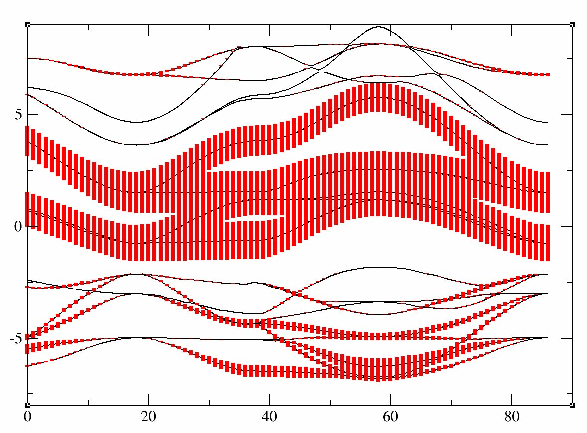

This lesson aims at showing how to perform a calculation of U and J in Abinit using cRPA. This method is well adapted in particular to determine U and J as they can be used in DFT+DMFT. The paper describing the implementation is [Amadon2014].
It might be useful that you already know how to do PAW calculations using ABINIT but it is not mandatory (you can follow the two lessons on PAW in ABINIT (PAW1, PAW2)). The DFT+U tutorial in ABINIT (DFT+U) might be useful to know some basic variables about correlated orbitals.
The first GW tutorial in ABINIT (GW) is useful to learn how to compute the screening, and how to converge the relevant parameters (energy cutoffs and number of bands for the polarizability).This lesson should take two hours to complete (you should have access to more than 8 processors).
The cRPA method aims at computing the effective interactions among correlated electrons. Generally, these highly correlated materials contain rare-earth metals or transition metals, which have partially filled d or f bands and thus localized electrons. cRPA relies on the fact that screening processes can be decomposed in two steps: Firstly, the bare Coulomb interaction is screened by non correlated electrons to produce the effective interaction Wr. Secondly, correlated electrons screened this interaction to produce the fully screening interaction W. (see [Aryasetiawan2004]). However, the second screening process is taken into account when one uses a method which describes accurately the interaction among correlated electrons (such as Quantum Monte Carlo within the DFT+DMFT method). So, to avoid a double counting of screening by correlated electrons, the DFT+DMFT methods needs as an input the effective interaction Wr. The goal of this tutorial is to present the implementation of this method using Projected Local Orbitals Wannier orbitals in ABINIT (The implementation of cRPA in ABINIT is described in [Amadon2014] and projected local orbitals Wannier functions are presented in [Amadon2008] ). The discussion about the localization of Wannier orbitals has some similarities with the beginning on the DMFT tutorial (see here and there)
Several parameters (both physical and technical) are important for the cRPA calculation:
You might create a subdirectory of the ~abinit/tests/tutoparal directory, and use it for the tutorial. In what follows, the names of files will be mentioned as if you were in this subdirectory
Copy the files ../Input/tucrpa_1.in and ../Input/tucrpa_1.files in your Work directory, and run ABINIT: (as usual, the actual "abinit" command is something like ../../../../src/98_main/abinit):
abinit < tucrpa_1.files > log_1
This run should take some time. It is recommended that you use at least 10 processors (and 32 should be fast). It calculates the LDA ground state of SrVO3 and compute the band structure in a second step. The variable pawfatbnd allows to create files with "fatbands" (see description of the variable in the list of variables): the width of the line along each k-point path and for each band is proportional to the contribution of a given atomic orbital on this particular Kohn Sham Wavefunction. A low cutoff and a small number of k-points are used in order to speed up the calculation. During this time you can take a look at the input file. There are two datasets. The first one is a ground state calculations with nnsclo=3 and nline=3 in order to have well diagonalized eigenfunctions even for empty states. In practice, you have however to check that the residue of wavefunctions is small at the end of the calculation. In this calculation, we find 1.E-06, which is large (1.E-10 would be better, so nline and nnsclo should be increased, but it would take more time). When the calculation is finished, you can plot the fatbands for Vanadium and l=2 with
xmgrace tucrpa_O_DS2_FATBANDS_at0001_V_is1_l0002The band structure is given in eV.

and the fatbands for one oxygen atom and l=1 with
xmgrace tucrpa_O_DS2_FATBANDS_at0003_O_is1_l0001.
One can easily check thats bands 21-23 are mainly d-t2g and bands 24-25 are mainly eg: just use pawfatbnd=2 in tucrpa_1.in and relaunch the calculations. Then the file tucrpa_O_DS2_FATBANDS_at0001_V_is1_l2_m-2, tucrpa_O_DS2_FATBANDS_at0001_V_is1_l2_m-1 and tucrpa_O_DS2_FATBANDS_at0001_V_is1_l2_m1 give you respectively the xy,yz and xz fatbands (ie d-t2g) and tucrpa_O_DS2_FATBANDS_at0001_V_is1_l2_m+0 and tucrpa_O_DS2_FATBANDS_at0001_V_is1_l2_m+2 give the z2 and z2-y2 fatbands (ie eg).
So in conclusion of this study, the Kohn Sham bands which are mainly t2g are the bands 21, 22 and 23.
Of course, it could have been anticipated from classical crystal field theory: the vanadium is in the center of an octahedron of oxygen atoms, so d orbitals are splitted in t2g and eg. As t2g orbitals are not directed toward oxygen atoms, t2g-like bands are lower in energy and filled with one electron, whereas eg-like bands are higher and empty.
In the next section, we will thus use the d-like bands to built Wannier functions and compute effective interactions for these orbitals.
In this section, we will present the input variables and discuss how to extract useful information in the log file in the case of the d-d model. The input file for a typical cRPA calculation (tucrpa_1.in) contains four datasets (as usual GW calculations, see the GW tutorial): the first one is a well converged LDA calculation, the second is non self-consistent calculation to compute accurately full and empty states, the third computes the constrained non interacting polarizability, and the fourth computes effective interaction parameters U and J. We discuss these four datasets in the next four subsections.
Copy the files ../Input/tucrpa_2.in and ../Input/tucrpa_2.files in your Work directory. The input file tucrpa_2.in contains standard data to perform a LDA calculation on SrVO3. We focus in the next subsections on some peculiar input variables related to the fact that we perform a cRPA calculation. Before reading the following section, launch the abinit calculation:
abinit < tucrpa_2.files > log_2
Before presenting the input variables for this dataset, we discuss two important physical parameters relevant to this dataset.
iscf2 -2 # Perform a non self-consistent calculation nbandkss2 -1 # Number of bands in KSS file (-1 means the maximum possible) kssform 3 # Format of the Wavefunction file (should be 3) nbdbuf2 4 # The last four bands will not be perfectly diagonalized tolwfr2 1.0d-18 # The criterion to stop diagonalization # == Compute Wannier functions usedmft2 1 # Mandatory to enable the calculation of Wannier functions as in DMFT. dmftbandi2 21 # Precise the definition of Wannier functions (also used for DMFT calculations) dmftbandf2 25 # Precise the definition of Wannier functions (also used for DMFT calculations)
We add some comments here on three most important topics
optdriver3 3 # Keyword to launch the calculation of screening gwcalctyp3 2 # The screening will be used later with gwcalctyp 2 in the next dataset getwfk3 -1 # Obtain WFK file from previous dataset ecuteps3 5.0 # Cut-off energy of the planewave set to represent the dielectric matrix. #It is important to converge effective interactions as a function of this parameter. # -- Frequencies for dielectric matrix nfreqre3 1 # Number of real frequencies freqremax3 10 eV # Maximal value of frequencies freqremin3 0 eV # Minimal value of frequencies nfreqim3 0 # Number of imaginary frequencies # -- Ucrpa: screening ucrpa_bands3 21 25 # Define the bands corresponding to the d contribution # -- Parallelism gwpara3 1
We add some comments on convergence properties
optdriver4 4 # Self-Energy calculation gwcalctyp4 2 # activate HF or ucrpa getwfk4 1 # Obtain WFK file from dataset 1 getscr4 2 # Obtain SCR file from previous dataset ecutsigx4 30.0 # Dimension of the G sum in Sigma_x. # -- Frequencies for effective interactions nfreqsp4 1 freqspmax4 10 eV freqspmin4 0 eV nkptgw4 0 # number of k-point where to calculate the GW correction: all BZ mqgrid4 300 # Reduced but fine at least for SrVO3 mqgriddg4 300 # Reduced but fine at least for SrVO3 # -- Parallelism gwpara4 2 # do not change if nsppol=2
We are now going to browse quickly the log file for this calculation.
First, at the beginning of the log file, you will find the calculation of the bare interaction for the atomic wavefunction corresponding the angular momentum specified by lpawu, in the input file (here lpawu =2). It is a simple fast direct integration. Note that this information is complete only if you use XML PAW atomic data (as the one available on the JTH table available on the ABINIT website).
=======================================================================
== Calculation of diagonal bare Coulomb interaction on ATOMIC orbitals
(it is assumed that the wavefunction for the first reference
energy in PAW atomic data is an atomic eigenvalue)
Max value of the radius in atomic data file = 201.3994
Max value of the mesh in atomic data file = 910
PAW radius is = 2.2000
PAW value of the mesh for integration is = 587
Integral of atomic wavefunction until rpaw = 0.8418
For an atomic wfn truncated at rmax = 201.3994
The norm of the wfn is = 1.0000
The bare interaction (no renormalization) = 17.7996 eV
The bare interaction (for a renorm. wfn ) = 17.7996 eV
For an atomic wfn truncated at rmax = 2.2000
The norm of the wfn is = 0.8418
The bare interaction (no renormalization) = 16.0038 eV
The bare interaction (for a renorm. wfn ) = 22.5848 eV
=======================================================================
Various quantities are computed, the one which is interesting to see here, is the bare interaction
computed for a wavefunction truncated at a very large radius (here 201.3994 au ), ie virtually
infinite. We find that this bare interaction is 17.8 eV. We will
compare below this value to the bare interaction computed on Wannier orbitals.
U'=U(m1,m2,m1,m2) for the bare interaction - 1 2 3 4 5 1 16.041 14.898 14.885 14.898 15.715 2 14.898 16.041 15.508 14.898 15.092 3 14.885 15.508 16.567 15.508 15.114 4 14.898 14.898 15.508 16.041 15.092 5 15.715 15.092 15.114 15.092 16.567
Hubbard bare interaction U=1/(2l+1)**2 \sum U(m1,m2,m1,m2)= 15.3789 0.0000 (Hubbard bare interaction U=1/(2l+1) \sum U(m1,m1,m1,m1)= 16.2514 0.0000)[To speed up the calculation and if one needs only these average values of U and J, one can use nsym=0 in the input file, but in this case, the interaction matrix does not anymore reproduce the correct symmetry. For several correlated atoms, the implementation is under test and it is mandatory to use nsym=1.]
Hund coupling J=U(m1,m1,m2,m2) for the bare interaction
- 1 2 3 4 5
1 16.041 0.482 0.555 0.478 0.249
2 0.482 16.041 0.329 0.478 0.478
3 0.555 0.329 16.567 0.400 0.555
4 0.478 0.478 0.400 16.041 0.482
5 0.249 0.478 0.555 0.482 16.567
bare interaction value of J=1/((2l+1)(2l)) \sum_{m1/=m2} U(m1,m2,m2,m1)= 0.4486 0.0000
U'=U(m1,m2,m1,m2) for the cRPA interaction
- 1 2 3 4 5
1 3.434 2.432 2.338 2.432 2.966
2 2.432 3.434 2.809 2.432 2.495
3 2.338 2.809 3.641 2.809 2.430
4 2.432 2.432 2.809 3.434 2.495
5 2.966 2.495 2.430 2.495 3.641
Hubbard cRPA interaction for w = 1, U=1/(2l+1)**2 \sum U(m1,m2,m1,m2)= 2.7546 -0.0000
(Hubbard cRPA interaction for w = 1, U=1/(2l+1) \sum U(m1,m1,m1,m1)= 3.5167 -0.0000)
Hund coupling J=U(m1,m1,m2,m2) for the cRPA interaction
- 1 2 3 4 5
1 3.434 0.440 0.508 0.435 0.247
2 0.440 3.434 0.315 0.436 0.442
3 0.508 0.315 3.641 0.378 0.444
4 0.435 0.436 0.378 3.434 0.446
5 0.247 0.442 0.444 0.446 3.641
cRPA interaction value of J=1/((2l+1)(2l)) \sum_{m1/=m2} U(m1,m2,m2,m1)= 0.4092 0.0000
-------------------------------------------------------------
Average U and J as a function of frequency
-------------------------------------------------------------
omega U(omega) J(omega)
0.000 2.7546 -0.0000 0.4092 0.0000
-------------------------------------------------------------
ecuteps (Ha) U (eV) J (eV)
3 3.22 0.43
5 3.01 0.42
7 2.99 0.40
9 2.99 0.40
So, for nband=30, ecutsigx=30 and a 4x4x4 k-point grid,
the effective interactions are converged with a precision of 0.02 eV for ecuteps=5.
nband U (eV) J (eV)
30 3.01 0.42
50 2.75 0.41
70 2.71 0.41
90 2.70 0.40
So, for ecuteps=5, ecutsigx=30 and a 4x4x4 k-point grid,
the effective interactions are converged with a precision of 0.05 eV for nband=50.
ecutsigx (Ha) U_bare (eV) J_bare (eV) U (eV) J (eV)
30 15.38 0.45 3.22 0.43
50 15.38 0.46 3.22 0.44
70 15.38 0.47 3.22 0.45
For ecuteps=3, nband=30 and a 4 4 4 k-point grid, effective interactions are converged
with a precision of 0.02 eV for ecutsigx=30 Ha.
kpoint grid U_bare (eV) J_bare (eV) U (eV) J (eV)
4 4 4 15.38 0.45 3.22 0.43
5 5 5 15.38 0.44 3.14 0.43
6 6 6 15.36 0.44 3.19 0.43
7 7 7 15.35 0.44 3.19 0.43
For ecuteps=3, nband=30 and ecutsigx=30, effective interactions are converged to 0.01 eV for a
k-point grid of 6 6 6.
The converged parameters are thus ecuteps=5,ecutsigx=30,ngkpt=6 6 6, nband=50 with
an expected precision of 0.1 eV.
We will use instead ecuteps=5,ecutsigx=30,ngkpt=4 4 4, nband=50 to lower the computational cost.
In this case, we find values of U and J of 2.75 eV and 0.41 eV and U is probably underestimated by 0.1 eV.
model ucrpa dmftbandi/dmftbandf ucrpa_bands | Ubare Ubare diag Jbare | U Udiag J
d - d 1 21/25 21 25 | 15.4 16.3 0.45 | 2.8 3.5 0.41
t2g-t2g 1 21/25 21 25 | 15.3 16.0 0.48 | 2.8 3.4 0.44
dp-dp 1 12/25 12 25 | 19.4 20.6 0.67 | 10.1 11.2 0.64
d -dp (a) 1 12/25 21 25 | 19.4 20.6 0.67 | 3.4 4.4 0.62
d -dp (b) 2 12/25 12 25 | 19.4 20.6 0.67 | 1.6 2.6 0.60
Even if our calculation is not perfectly converged with respect to k-points,
the results obtained for the
d-d, dp-dp, and d-dp (a) models are in agreement (within 0.1 or 0.2 eV) with results obtained
in Table V of [Amadon2014] and references cited
in this table.
To obtain the results with only the t2g orbitals, one must use a specific input file, which is tucrpa_4.in, which uses specific keywords, peculiar to this case (compare it with tucrpa_2.in). We now briefly comment the physics of the results.
# -- Frequencies for effective interactions
nsym 0
nfreqsp3 60
freqspmax3 30 eV
freqspmin3 0 eV
nfreqsp4 60
freqspmax4 30 eV
freqspmin4 0 eV
grep "U(omega)" -A 60 tucrpa_5.out > Ufreq.datRemove the first line, and plot the data: